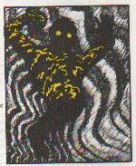
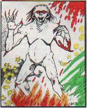
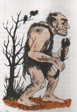

|
An excerpt from Gnash's past can be found in Amber's second diary entry.
Previous adventures of Gnash in the world of Trassgar can be found on the
Original Trassgar Adventures page.
The new Trassgar adventures of Gnash begin
on Stor Restyl's page, move 1.
The scratched, clawed, bitten, and despite meticulously applied bandages,
bleeding Gnash Gnarly clung to his pony and listened to his heart pound in
his chest.
[c.f. the recent
battle for details] His head, also, throbbed with each beat, and
he thought of his mortality. Desipte his one hundred and
seven years--as measured by his home planet's period of revolution, not
Trassgar's shorter year with its relatively brief seasons--the battered dwarf
always thought of himself as not too old, but definitely not young, either.
This night, he felt more on the definitely not young side of things.
Whenever he lamented his age, or his mortality, or both, as was the case
this evening, Gnash thoughts drifted toward his two sons, wherever in Reorx's
name they might be. He never imagined living his final days so far away
from them. For that matter, he never imagined living any of his
days so far away from Krynn. A smile crawled across his face and krinkled
the coarse, brown hair of his beard. He wagered--to himself, not having
anyone else to con into a dwarven bet--that Smash and Crash were having
a multitude of their own great adventures, that one day would be the substance
of countless dramatic and never exaggerated stories. Stories he vowed that
he would listen to with pride.
"But, first things first," Gnash spoke to his mount, who properly paid
him no greater attention than when the dwarf was silent.
"Get me back to Forest's Edge, you hear?"
"I'll have plenty of time to fine-tune my story later!"
The pony grunted as Gnash patted the beast's neck, the side with the mane
hair draped across it.
* * *
Gnash's mount carried him back to Forest's Edge without interruption from
any creature or other night traveler. Not bothering to return his pony
to the stables, Gnash looped the reins over the railing of the High Safe
Inn and stumbled up the three wooden stairs to the front porch. The light
was still on, not curiously, as often Klive would entertain guests late
into the night--and into the morning if the conversation were interesting
enough.
He pushed the polished wooden door open, chuckling to himself when he noticed
the scorch marks on the frame--Olen's handiwork from some weeks past. There
were a few patrons at a table near the middle of the dining room, and
Klive stood behind his counter, writing on a ledger. The side table
where he and his friends gathered to eat breakfast, to discuss strategy,
or to plan their adventure routes was currently empty. Most likely the
members of his troupe--Dang, we need to come up with some kind of name for
ourselves--that were still in town were upstairs, asleep.
"Gnash!" Klive had looked up, and noticed the quite-worse-for-wear dwarf.
He put down his stylus and grimaced. "Ouch, what got a hold of you?"
Gnash hobbled forward, past the diners who had halted their conversation
to spy the newcomer, and met Klive who had come around to the front of his
counter. "Man oh man," Klive continued. "I better go wake up 'Sheeba."
Gnash smiled. Just the thought of relaxing under the healing touch of the
team's cleric, and friend, was enough to sooth his aching joints. "Please do.
I'm in real bad shape, but not as bad as the shape we left those three
nasties in." Klive raised his eyebrows in curiosity. "I'll tell you all
about it, just as soon as I stop leaking on your floor!"
With that, Klive helped Gnash to a seat, and hurried to the side doors that
led to the rooms of the High Safe. Gnash smiled at the diners as he
unholstered his pole arm, and started to unbuckle his gauntlets.
The trees seemed to sing their own songs as
they waved in unison with the silvery speckles of the pond nymphs.
Every time the sun peeked out from behind the canopy, it was as if a
sunburst was sent forth from the dancing beauties. Each one seemed
to radiate a more perfect color spectrum, when one of the nymphs spotted him.
She began to move her arms in fluid motion as she glided across the water
to him and then he felt her scratchy hand on his face… wait a minute...
"WHAT??"
"Glad to have you back, Olen!" gruffed Gnash Gnarly as he tousled
the wizards hair. Olen rolled over, clearly perturbed about more than
being awoken.
"Uh-huh," he muttered, rubbing his face as if to remove an unwanted
spot of dirt. "Is Amber downstairs waiting on us?"
"Nope. Long story. Why don't we discuss it over breakfast? I have
a mean cravin' for some big gazoola sausages with fried bogfah eggs on
the side. Mmm Mmm! It's enough to get a man's blood pumpin'!"
"Do you always think of your stomach first, Gnash?" Stor chuckled.
"Well, you know what they say. The way to a dwarf's heart is
through his stomach! So you guys look a little worse for wear; what
happened to you out there?" the burly dwarf queried.
Before his tired young companions had a chance to reply, there was
a loud rap on the door. Opening it revealed Klive, looking rather
annoyed. Everyone knew he didn't like to have to climb the stairs for
any reason. Intuitively Gnash's grip tightened as he realized he was
without his trusty bardiche. "What's wrong Klive?" he asked.
"Gnash, apparently there have been some thefts in town. Mysterious
ones. The constable is downstairs and demands to speak with every
sorry soul who came in or out of here last night. Want any more info,
ask him yourself!" he grumbled as he wandered down the hall a bit
further, knocking on another door.
"I guess there's another reason to head on downstairs, then," Gnash
said as he walked out of the room. "See you down there."
The tavern was louder than normal. The news of some mysterious
thefts had apparently livened conversations with theories of everything
from faeries gone bad to hobgoblins taking form from the dreams of
little elves and reeking havoc while the moons were full. Still, it
wasn't as loud as during the summer days, when travellers abounded.
Winter months meant fewer travellers, and with the war going on
travellers were scarce as it was; that someone could commit a crime
so mysterious with so few extra people in town was a feat indeed.
A tall, stocky human wearing a long white cloak sat at a table near
the door, interviewing a young elf. All eyes occasionally darted over,
speculating on whether or not the youngling had any knowledge of the
crime. The tall man's eyes shifted toward the movement at the
staircase, took in the appearance of Gnash, gave a glance of
acknowledgement, and turned to continue his interview. Gnash, taking
a seat at a table in the center of the room, began to peruse the menu
for the day. About the time he began salivating over the roasted
goose and milk muffins on the menu for lunch, the constable approached
him.
His dark brown breeches made a swishing noise as the thick, coarse
material rubbed together. "G'morning to you, kind dwarf. I am J'lan Ghant,
Constable
of Forests Edge. We have had quite a mysterious crime committed. May
I ask if you have any knowledge of a theft that occurred last night
at Little Keepit's Bazaar?"
"I'm afraid I don't, Constable Sir. I came in yesterday afternoon,
bashed and bleeding, had myself tended to, ate some of Klive's
vittles, and hit the sack. First light I headed to the temple to make
it right after the morning vespers; didn't see anything then either.
[By the way, Gnash heals 2d8=10 under Beer-sheeba's
ministrations, and 30 under ministrations of FE Temple clerics.]
What happened? It seems strange that you have no clues; or do you?"
The constable sighed heavily, as if he was much too tired to
account for the hour. "Well it appears that someone robbed Lil'
Keepit before dawn's light. I suspect magic use was involved, since
I cannot find a point of entry, or anything broken. When Lil' Keepit
arrived this morning he found everything as he left it, except that
several expensive pieces were missing from his inventory, and only
those pieces." He looked up as an elderly elf walked in the front
door and sat at the bar. "I hate these cases. I usually can't solve
them, seeing as magic users who have this kind of capability don't
usually stick around long enough to be caught. That, or when and if
we do find them, they give us one hell of a time subduing them. But,
we have to try."
"I hear ya," Gnash said, sympathizing with the constable's predicament.
"Well listen, I'll need to talk to the others upstairs, and then I
should be heading to the guard towers and getting morning reports. If
you come across anything else, please do me or one of my deputies
know." He glanced again at the staircase, clearly wondering how long
it would take him to complete his interviews.
"I can shorten your time by some, anyway Constable Sir. See that
young elven wizard coming down the stairs?" he motioned toward the
leftmost staircase as Olen Orpheus entered the room, saw them, and
began walking their direction. "He's clean. He and his party got
here last night, looking completely bushed and beaten up." Gnash
puffed out his chest and raised his head to his full height (all
four feet one inch of it) as he
said with honor, "I can vouch for them."
"What's going on?" Olen inquired.
"Apparently, a robbery." Gnash summarized: "Sometime last night,
Lil' Keepit's Bazaar lost a few items."
"Where were you last night?" the Constable gruffed, seeming
perturbed.
"I was on my way into town, then once we entered the township we
came straight here, and then to bed." Olen replied.
"I told you I could vouch for him, Constable," Gnash said, looking
perplexed.
"Hmm. Well, alright then," the Constable said, clearly unsure, but
he glanced at Gnash and nodded. Then, however, he turned back to Olen.
"Don't you be causing any trouble, now, got it?" There was challenge
in his eyes.
"Exactly what is your pr-" Olen began heatedly, his patience thin
from exhaustion and the inner emotional turmoil of past days, but
Gnash interrupted abruptly. "No sir, Constable sir, he won't cause
any troubles, don't you worry about it!" And smiling, he walked the
Constable back to his interviewing table.
When Gnash came back, his smile was more genuine than when he had
left, and he sat down to order his second course of breakfast.
"Well what was his problem?" Olen queried, quite annoyed at such an
incidence this early in the morning.
"I'm not sure," Gnash replied, "but I think your relationship will
improve once I, the newly deputized man at the Forest's Edge
Constabulary appoint you to my group of deputies in charge of catching
the thieves!" When Olen didn't respond, Gnash's face began to
redden. At long last, he finally had to let his chest drop a bit.
Clearly Olen was not impressed.
"Look, Olen, I know he wasn't very nice to ya but this could mean a
good relationship betwixt us and the law here. And, there is reward
money involved. If you and your woman and the group archer are going
to join Amber, Tilder, and I, you're going to need horses to keep up,
so we need that money. Besides, aren't you curious?" Gnash saw the
twinkle in Olen's golden eyes and didn't have to wait for an answer.
He happily scarfed down his last sausage link and motioned for the
barmaid to come and take his third order.
* * *
When the rest of their friends had volunteered their alibis from
the previous night and all had eaten, Gnash eagerly led the charge to
the scene of the crime. Stor grumbled about having had enough
adventures for a while--"Frak it, Olen! I'm an archer, not an
investigator!"--but Olen wouldn't let him get away with it.
Keepit's Bazaar didn't look like the scene of the crime; in fact,
it didn't really look like a 'bazaar'. It was decorated
conservatively and neatly. Finer merchandise was housed in
glass cases held within the countertops near the shopkeepers'
station, and the same countertops were sanded smooth and seemed
to have been recently wiped clean. The floor was rough but dirt-free,
the windows were clean and clear, and they were even graced with
blue and white striped curtains. This was not an ordinary bazaar.
A very large human moved around near the shopkeepers' station,
showing an ogre a few daggers and pouches. The only other movement
was indicated by a sound coming from the back storeroom, a dull,
rapid swishing noise.
Finally, with a grunt, the ogre moved out of the store,
disgruntled.
"Hello there Mr. Keepit!" Gnash began, in his usual friendly
banter. "Sorry to hear about yer robbery."
"Thank ye sir." Lil' Keepit replied. Scurge thought that his
name was quite the misnomer. The human designated 'Lil' Keepit' was
anything but little. He towered over everyone else in the store, and
his broad shoulders had difficulty maneuvering between the aisles,
though they seemed big and roomy to everyone else. He brushed a lock
of sandy brown hair out of his eyes and asked, "What ken I show you
fellas?"
"Actually, we were hoping for some information on the robbery last
night," Olen offered, as Gnash silently wished he had a badge to show
off. "Ya see, we've been hired by the local constabulary to
investigate this robbery," Gnash continued. "Do you mind answering
a few questions?"
"Nah, I don' mind," said Lil' Keepit, "though I don' see why you
think you can help me anymore then the constable can. There tweren't
nothin' touched! I couldn't find how they got in, nothin' was broken,
nothing had been jimmied, and no one else got a key to this place but
me and the missus. Hadta be a wizard involved somehow, someway."
"I see. Where were the missing items taken from?"
"Two came from in here, one in this glass case here, and one in that
one over there. The other came from the safe in the back. Whoever did
it knew what they were doing; they were some of my most valuable items." He
paused a moment in thought. "I can tell you this. Whoever did this is
might powerful, and I for one don't want to tangle with 'em anymore'n I
would a mean mama bobcat whose kits were in my backpack, if you get my drift."
"Does anyone else have an intimate knowledge of your business, like what
inventory you get is valuable and where you keep it?" Olen queried.
"Well, there's my wife, but she obviously didn't do it. Then there's
my brother-in-law, Big Keepit, who supplies me with a good bit of my
inventory, and knows what I carry, how much it's worth, and when I sell it.
But no use checking him out, 'cuz he don' need the money, and he and I are
real close."
"Did he supply you with all of the goods that were stolen?" Gnash asked.
"Nope. He supplied me with one of the three pieces--the tiara--and a
little old lady came in and sold me the other two as a set."
"What did the pieces look like?" Gnash asked again.
"The set included an amulet and a ring, both with a central dark topaz
stone. The amulet was in the shape of a cornucopia, as was the setting on
the ring. The metal was silvery, and I was waiting on a chance to examine
it to determine if it wuz silver or white gold. The other one? Hmmm." He
sharpened an antique knife as he thought. "Oh yes. The tiara. It had
lots of sparkling water gems set in silver, with
kind of a webbing effect in a headband shape. Oh! And there was a fourth
item that I forgot about. The silk bag. It was chartreuse; kind of a hideous
color, really, but soft as a baby's bottom and beautiful in a strange sort
of way. My wife said that it was so beautiful that it gave her the
creeps!" He chuckled loudly and nodded in his wife's direction.
"She's something else, that wife o' mine."
The rest of the group looked around the place while Gnash and Olen
continued their conversation with the proprietor, then they all headed
outdoors to discuss the matter at hand.
"Well there weren't any obvious clues in there!" Scurge commented.
"Yeah, but that doesn't mean we won't find any other places." Stor
added thoughtfully. "How about we check the guardposts in and out of
town and see what they might have seen?"
"That's a good idea; but I also want to check out this brother-in-law
that Lil' Keepit mentioned. If this brother-in-law wanted to rip him
off, it wouldn't be too hard, given the circumstances. And, even if he
wasn't involved, maybe he had a bit too much mead and ran off at the
mouth sometime to the wrong bar patron? I think it's worth investigating."
Gnash said matter-of-factly.
Deputy Gnash and his recently deputized friends,
Olen, Scurge and Stor, checked in with the watch at the south gate next.
"Anybody leave town late last night?" Gnash flashed his temporary deputy
badge to show that he had the authority to inquire about such information.
The guard looked in the crude log book and reported, "Eh, let's see. A few,
just before dawn, it seems. A drunken ogre, then an elderly elven couple,
and somebody else."
"Somebody else?" Olen asked suspiciously.
"Yeah." The watchman shrugged. "That's all it says, sorry."
"No help there," Gnash stated the obvious to his friends. "Thanks!"
The quartet of investigators reported with the constible before heading out of
town. "We have a lead, but we
didn't get anything else from Little Keepit, I'm afraid," Gnash summarized for
Constable Ghant. "We're going to head south, out of town, to see Big Keepit.
The constible raised and eyebrow. "Yeah, you guessed it. His brother-in-law."
Their next stop was the town's temple. Gnash nodded to the cleric who
patched him up that very morning, and proceeded to the head cleric. They asked
him whether anyone had come by late last night. "Maybe somebody, to light
some votive candles or say a prayer. Nothing out of the ordinary." Gnash
reasoned that if somebody had run into trouble getting out of town after the
heist, maybe they'd stopped at the temple for a breather, or to wait something
or someone out.
They revisted the south gate long enough to pass through, and in the waning
light of the late afternoon, proceeded to traverse the well-beaten path out
of Forest's Edge. The main path stretched, snaked and skirted along the
edge of the Black Forest's western border, and eventually they would arrive
at a settlement where lived Big Keepit, whose real name was Timlin, according to
his brother-in-law.
Late in the evening they wandered off the main path, and as was usual for
travelers along the way, camped at a frequently used site. Wooden logs,
long since settled into depressions in the ground, had been arranged around
a pit for a fire. Olen's expertise in fire building, with a little help
from Gnash tinder box, flint and steel, soon brought some fire into the
camp's pit. [Rule Intrusion: Olen succeeded in a
fire building skill check, rolling a 2. Needed 12 or less.]
An eerie mist had crept in from the forest's border, and
before they could get comfortable or even think about retiring for the night,
darkness enclosed their campsite. The group drew closer to the flames
for warmth and light.
"Moaning." Olen stood up suddenly. His half-elven ears almost pointing
in silent sentry. "Do you hear it?"
Before he could draw an answer from his friends, a form floated out from
the mists and into their view. Its eyes were more like fading yellow suns,
and yellow crackles scurried throughout its black humanoidal torso which
descended into a spiraled point that menacingly teased the blades of grass
beneath.

The ghostly form drew closer to Olen who was visibly spooked by the creature.
Without a word, Gnash was suddenly between them, swinging his bardiche in a fierce
swipe. His aim he thought to be true, but his blade passed harmlessly through
the dark body--or was it just the shadows in front of it?
[As this adventure is being reconstructed from
scribbled notes, the dice rolls are omitted as they were not recorded for
this battle.]
Stor drew his own blade and thrust it as he stepped around the fire, but
his strike was off; his momentum carried him a few steps beyond the creature
who continued to hone in on Olen Orpheas.
Olen pointed his finger at the
creature and hissed, "Kala!" Three missiles composed of pure magic
appeared at the wizard's finger,
whistled briefly and quickly closed the gap between him and the creature.
They seared through its crackling flesh and disappeared as quickly as Olen
conjured them.
The creature emitted a terrible sounding moan but pushed forward,
reaching out and grabbing Olen's hand with a cold grip. Now it was Olen's
turn to cry out as he pulled his hand away. He felt weakened and his mind
was clouded with a painful head rush.
[Olen loses one level of life experience and 1d6 = 5 hit
points to the creature's touch. Consequently, Olen loses 1d4 = 1 hit point of
his maximum hit point total. (So he now has 10 of 19 hit points, whereas
before he had 15 of 20 hit points after his battle with Abath.)]

A gasp from Scurge, who had grabbed her long sword to enter the melee, caused
Gnash and Stor to scan the shadows. Two small creatures with pale skin
and long, clawed fingers skipped into the light cast by the fire. They
hissed and came at Gnash and Stor who stood nearby. With a downward swing
of his bardiche, Gnash split the air between him and the creature in half
and was surprised that he'd missed again. Scurge rushed in with her blade
and, not through error or clumsiness on her part, Gnash gathered, she, too,
failed to hit the waist-high creature.
"Try your enchanted blades!" Gnash exclaimed, drawing on his experience
with fighting creatures who perhaps could only be harmed through magical
means. (Gnash stomached a shudder that crept up from his belly as he
recalled his gruesome, and near fatal, time spent in Ravenloft.)
He quickly dropped the pole-arm in favor of the dagger on his belt.
ripping tightly the dagger he'd been given by
the monks at Ice City, the dwarf looked for an opportunity to strike again
as the creatures danced around him toward the fire--or was it toward Olen?
"Not so fast!" Stor cried. He threw his own enchanted dagger--a gift from
the same monks from the northwest--and as he watched it plunge into the
side of the demonic creature, he heard Olen spit out the words to his
favorite spell. Stor's target fell from the wound, hitting the ground
face down as Olen's spell generated a yellow glowing ball of magic in
his palm.
The chromatic orb of blindness was Olen's choice of effect. The wizard
tossed it underhanded and backed away from his attacker, expertly keeping
his concentration on the moment--and not on the battle-slowed
minutes and life energy that were now things of the past. His concentration
was rewarded as his aim was true. The ball exploded in the ghostly form's
center and obliterated what corporeal form they could see into nothingness.
Gnash quickened the battle to its close with a short advance by foot
and an attack by thrust of his magic dagger. He felt the strength of
his attack combine with the enchanted sharpness of his blade, and the
second of the pale creatures fell before it reached Olen. Gnash was about
to survey the scene to confirm the battle's finality when his heart
sank at the sight before him.
Two more of the creatures, fangs and claws glinting
with reflected light, emerged from the darkness of the night. Scurge, too,
exchanged sword for her enchanted dagger. She silently
thanked Stor that he'd given her one of the magic Ice City blades and
threw the dagger across the fire pit toward their foe. It whistled
past them both and vanished into the night outside the light of the fire.
Olen conjured another golden orb as Stor stepped into the path
of one of them. These two also seemed intent on homing in on the
archer's half-elven friend! Stor swung with his second enchanted
dagger and connected solidly into its left arm; he noticed that
Gnash had beaten him to pinning this creature by a split-second
with an accurately thrown attack with his own dagger. The duo of
puncture wounds forced the creature to the ground without another
movement.
The fourth and last remaining foe raked Stor on its way toward
where Olen was standing. [Stor takes
5 points of damage to his back and arm.] Stor tried to
hold back a scream, but was unsuccessful. The claws were ice cold,
yet burned him to the core! He fell to his knees, shocked.
Olen threw the orb with anger, and with revenge on his mind. The
glowing ball crackled with magical damage, but the creature pressed
on, fowl smelling blood sputtering from underneath its skin. Olen
quickly glanced around. Gnash was on his way but would be too late
to intercept. Scurge had reclaimed her sword and was also approaching
from Olen's right. But it was Stor, who suddenly wheeled around on
his knees, who offered the next--and final--strike. The dagger,
still caked with other-worldly blood, left his hand in a quick
release and ended the advance of what Gnash now remembered was a
demon called a manes.
The stillness of the surrounding night seemed to drown out the
crackling of the fire, as it was beyond their fire-lit haven
that the four focused their hearing and attention. A minute
passed before anyone spoke. "It is over," Stor muttered, falling
on his good side and clenching his teeth. He fiddled with the
leather straps on his boot, breaking off part of one to use as
a binding for his arm's wound.
The others watched in horror as the bodies of the four ash-skinned
manes crumbled into dust. "Manes," Gnash confirmed. "Type of demon,"
he continued as his companions looked to him for clarification.
Clearly the others had not encountered them before. "Never seen 'em
up close and personal, but I'd heard about them. They don't frequent
our plane of existence without some kind of attraction, though."
Gnash looked at Olen along with Stor, who'd sat up. Scurge helped
him tie his binding, not realizing what the others did.
[WIS check: Gnash: 1, Stor 1, Scurge 16,
Olen: 6.]
"Those creatures. They were after me," Olen spoke, staring with
horror into Gnash's trembling eyes. Gnash nodded his agreement,
and Scurge looked up in surprise.
Stor wondered what it was that
his friend had done to attract such evil, and then thought of the
night before when they faced the evil that was Abath. He looked
at Olen and grimaced.
Olen immediately rushed to his pack at the spot near the
camp where he had lain his belongings for the night. He rifled through
the items in his pack, sifting through scrolls, spellbooks, potions,
torches, pouches--
"Wha?" Olen cried with a shriek. He lifted up a pouch from his pack. It
matched perfectly the description of the silk bag Lil' Keepit offered of
one of the stolen items. He stared at the bag for a second, then looked at his
friends.
To his comfort, none of them had accusatory stares. In fact, Gnash's furled
brow betrayed his frustration. "Gimme that, Olen!" Gnash barked. He grabbed
the bag away from Olen. Opening the bag and looking inside, Gnash's brow
furled even further. "Empty!" he reported.
On a hunch, Olen dregged the bottom of his pack with his fingers. His search
was rewarded. He produced a ring with a setting on it in the shape of a
cornucopia. Again, it matched exactly the description of the shopkeeper.
The other two items weren't in his pack, but Olen checked the many folds and
pockets of his robe. There they were: the amulet and the tiara.
"Why? What? I don't understand?" Olen stammered.
"Me neither, little bubba," Gnash grumbled, obviously not taking his
nickname for Olen, who was much taller than the dwarf, literally. "But you
better give me those. Those baddies might've been after these things, not
you." Gnash pocketed the stolen goods. "But why? It doesn't make sense?"
"How did you come to have them?" Stor asked, continuing the train of thought.
"Beats me! It's like they just popped into my pack--I had no idea." Olen
shook his head. "I'm the thief? And I didn't even know it!"
Scurge tried to comfort Olen with her determination. "We'll figure it out,
Olen half-elven. We know you're not a thief. Now me, on the other hand...."
Her smile was sultry and also amusing. Olen let out a forced laugh, thankful
for the slight distraction.
"Let's test a theory I have, shall we?" Gnash suddenly spoke up.
Before anyone could argue, Gnash took off back toward the main path. Soon
he was out of sight, having vanished into the dark with a magical speed.
Olen could barely make out his
shape through his night vision for a second, then he vanished from that
level of perception as well. Olen stood up, bracing himself with his
staff for support as he rose.
Suddenly, there came a glow from his robes. They all noticed it, but Olen
was the only one of the three companions to piece it together.
[Rule intrustion: INT check: Olen: 9 (success), Scurge: 19
(failure), Stor: 16 (failure)] He shoved his hands into his pockets
deliberately. Sure enough, there were the stolen items. He produced them
for Stor and Scurge to see.
Over Stor's stammerings of confusion, Scurge started to speak, when suddenly,
a rush of air signalled the return of their dwarven warrior friend, helped
back to the camp with all the swiftness his magic boots could muster.
"The items disappeared from my grip!" Gnash exclaimed through gasps of air.
The dwarf was slightly winded from his sprint.
"And reappeared in my possession," Olen confirmed. "I noticed a glow about
the same time they must have appeared on me. Then he noticed the silk bag.
Its drawstrings were wrapped tightly around the staff he carried. Why had
he not noticed it before? "I don't get it."
"Well, something isn't right with that stick of yours, obviously!" Stor
said. He remembered that Olen had always carried it with him. In fact,
Stor could not remember a time Olen had let that staff out of his immediate
presence.
"It's not just a stick. It, it.... It belonged to someone I knew long ago."
He gripped the shaft of Gelfiar's staff tightly.
"Well," Gnash reported. "Let's rest the night. If we can. I'll keep a
watch out." He indicated Olen and Stor with a waive of his hands. "You two
get some sleep--you took some flak in that scuffle. Speaking of which,
you guys ok?" He suddenly remembered the terrible screams Olen and Stor
had emitted minutes ago.
Stor reported in first. "I'll be fine. Just added to my scar collection,
that's all. At least I will have when these lacerations heal." He winced
as he dropped back to his bedroll. "You ok, Olen?" In the light of the fire,
Stor couldn't tell Olen's complexion had whitened, but obviously he'd heard
his friend scream at the touch of the ghostly creature.
"No, I'm not ok. That thing--when it touched me. I feel drained. Tired."
Olen finally gave into the pain of his wound, although he had no cuts, bruises
or blood to show for it. "My mind hurts, as if memories had been ripped
from it." Olen gripped his head with his hands. "I, I have no memories
of my spells."
"Wraith," Gnash said grimly. Must've drained the life force right out of you.
"Such evil, the wraith, the demon manes." He looked at Olen with pity, and for
the first time, saw that Olen's eyes, still tinted with gold, looked much
older than the dwarf would have figured Olen to be. "I guess they were
somehow attracted to these stolen things. They cursed, maybe? Or magic?"
"Or evil?" Scurge guessed, reappearing in the light of the camp. She'd
disappeared into the night without anyone noticing, and had retrieved her
magic dagger.
"We'll figure it out in the morning." Gnash stated this matter-of-factly,
as if it were a certain thing. "Get some sleep," he repeated. "If anything
else comes to call, I'll--"
"We'll make sure it stays out of your hair," Scurge interrupted, looking
at Gnash intently. She seemed
alert, awake, ready and very able to argue Gnash out of a solitary watch.
With that settled, Olen settled into the folds of his robe and tried to go
to sleep. He gripped his staff tightly for reassurance. He had faith he
wouldn't be disturbed with Gnash and Scurge on the watch. But could they
protect his dreams?
At the break of dawn, Olen awoke to the sound of embers and
coals being doused with a hiss of water. Stor was fast asleep still,
and Scurge was nowhere in sight. Gnash stood over their campfire and
crushed some of the pieces of burnt wood with his boots, looking for any
hot coals he'd missed.
"Ah, good morning sleepy head!" Gnash chimed as he noticed Olen's awakening.
"Morning, indeed," Olen replied. He guessed it couldn't have been too far
into morning from the light of the sky. "Don't you ever sleep?"
"Me? Harumph!" Gnash mostly ignored the query and continued with packing
up his belongings. Olen noticed some wood shavings and wondered what Gnash
had been carving that night.
Scurge returned after a few minutes. She looked clean and refreshed. Olen
thought to himself that there must have been a stream nearby where she had
washed up. If he were feeling better, he might have been thinking less than
pure thoughts about sneaking around at the scene of her bath. How many times
had he heard Stor joke about such a classic tale of mischief in the woods?
"I sure could use a hot bath," Olen thought, returning his attention to himself
and his state of discomfort. "Heck, even a cold bath would do me good at this point,"
the half-elven wizard mused to himself.
Soon, Olen turned his thoughts completely to his traveling spellbook. While
the others readied and awakened, he tried to concentrate on his magic. He
managed to commit to memory a few spells before he lost his concentration.
The previous night's battle was too much engrained in his memory to allow him
further study. In fact, he credited the amulet he wore with enabling him to
get anything memorized at all! [Olen re-memorizes his
magic missile spell--enough for two castings.]
They finally turned back for Forest's Edge after rousing Stor from sleep and
gathering up their packs. Perhaps a half-hour had elapsed when they encountered
a trio of human merchants decked out in their colorful robes. One pulled
behind him a wooden cart filled with baubles and curiosities. Gnash gave them
a "We don't want any!" stare and the two groups passed by without incident.
A few minutes later, as Olen was shuffling his hands about in his robe pockets,
twiddling his fingers around a few spell component bags, he suddenly felt
something he didn't remember being there before.
"Wait!" he half-shouted to the other three. The four stopped nearby a well-worn
rock formation jutting from the northwest side of the trail, and soon Olen
had their undivided attention. He pulled out from an inner pocket a brown bag.
It was tied shut with a gold-colored tassle. "I think I just lifted this off
those merchants back there somehow!"
"Cripes, Orpheas, you're showing me up!" cried the thief, amused. "Do you give
lessons?" On the
outside, Scurge was chuckling. But she was thinking thoughts awful. "What
is going on with you, Olen?" she worriedly thought to herself.
"I swear I have nothing to do with it!"
But there was no time for argument. As they stood there, befuddled, a low
whoosh of something large passing overhead made them all cringe. In Stor's
case, he did more than cringe, and he ducked unabashedly.
They looked in the direction of the stone wall and saw a dirty, hairy man
of very tall and very bulky stature gazing at them. He was snarling and scratching
the rocks with his grime-covered fingers. The fur he wore across his chest was
tattered and barely covered his tanned hide; his hair covered the rest of what
Gnash sized up to be a hill giant.

"Excuse-ah me, mister!" Gnash spoke, stepping forward to accost the giant with
words, at least to start. "That wasn't very polite of you, don't you--"
Gnash's diplomatic efforts were met with a barrage of rocks no doubt torn from
the formation the giant was standing near. They pummeled him in his chest and
arms and gave him a few cuts. [Gnash suffers 2 pts of dmg.]
"Enough is enough!" cried Olen Orpheas. He let lose with his magic missile spell.
He was shocked but not entirely surprised to see only two missiles spew forth
from his fingertips. His powers had definitely been reduced by those damnable
wraiths. He gritted his teeth in anger, willing his magic to cause maximum
pain, if such a thing were possible. True to their nature, the missiles slammed
accurately into the chest of the giant, who reeled a bit from the attack.
At this point, Olen realized that the giant looked lost somehow. Almost,
hypnotized, if he had to guess.
The sound of a bowstring being released was accompanied by an equally audible
fwish of an arrow, compliments of Stor and his composite long bow.
The giant, in a fearless movement of limbs, caught the arrow in his
hands and crushed it. A second shot of Stor's bow sent an arrow glancing off
the rocks just to the giant's left.
Scurge, meanwhile, had retrieved two daggers from her leather strappings and
flung them expertly at the giant. They both scored deep cuts in the giant's
mid-section. [Scurge rolls 17, 13.]
The giant took offense at the counter strike by the four puny creatures and
swatted a head-sized boulder off the rock face. It tumbled over and struck
Gnash, knocking him down. [Despite Gnash's dwarven armor
class bonus of -4 vs giants, he is squashed for 6 pts of dmg!]
"What's the big idea?" Gnash bellowed as he got up, embarassed and angry.
In response, the giant stopped, looked dumbfounded at Gnash, and sighed.
It seemed to Olen that the clarity had returned to the giant's gaze. Before
anyone could react further, the giant turned around and fled away from his
own ambush site, leaving four adventurers to exchange puzzled looks.
"What is this, the week of the weird?" Stor muttered aloud. He lowered his
bow and walked to the rocks to retrieve and inspect the arrow he'd shanked.
Gnash muttered a few dwarven phrases under his breath. That was the extent of
the foursome's conversation the rest of the way back to the town.
* * *
"Sir, we need your help." Olen had led them to the library of mages nestled in
one of the more crowded sections of town. Aod, a wizard robed in the darkest
of blue, had agreed to meet with them.
"Certainly. Many will ask, but most will leave with more questions than
answers."
Gnash thought to himself that the way the human talked in riddles was no doubt
a product of his brainwashing at the hands of too many years of study in the
magic arts. He was glad his ancestors had never taken up the practice of
magic. It kept the dwarven people mighty by the power of muscle, not
trickery.
After hearing about their misadventures and discovery of the items in Olen's
possession, the wizard studied the items and paid Olen's staff many a less than
casual glance. "It's the staff, if you want my opinion." Aod nodded and
scratched his chin. He waved his hands and twiddled his fingers mystically
to the tune of a few arcane words.
"Where did you get this magic staff?" Aod asked Olen pointedly, after a few
minutes of concentration. Olen noticed that Aod had turned his attention
to the stolen items as well.
"It's, uh," Olen began, confused. He looked to Stor and then to Scurge for
explanation, but quickly remembered that neither of them knew the true nature
of his staff, long since cancelled by powerful magic. He continued. "It's
not magic." He thought to himself, "at least it's not anymore..."
He gulped, fearing what Aod might say in reply.
"It is, young elven magic-user," Aod spoke softly. "As for these stolen items,
they aren't magic in and of themselves. I don't know why the staff was
attracted to these items."
At the end of their meeting with Aod, the group came to the agreement that
Olen's staff was somehow the cause of the item relocations. Something had
caused it to re-awaken to magic. Olen shuddered at the thought of what--or
who--might have been responsible.
[Can it be? It only took me a year to finish the transcribing
of the adventure we had WAY back in January of 2000! Stay tuned for more
adventures of this merry band at The Forest's Edge
Forum, our Yahoo! club for this campaign.]
|